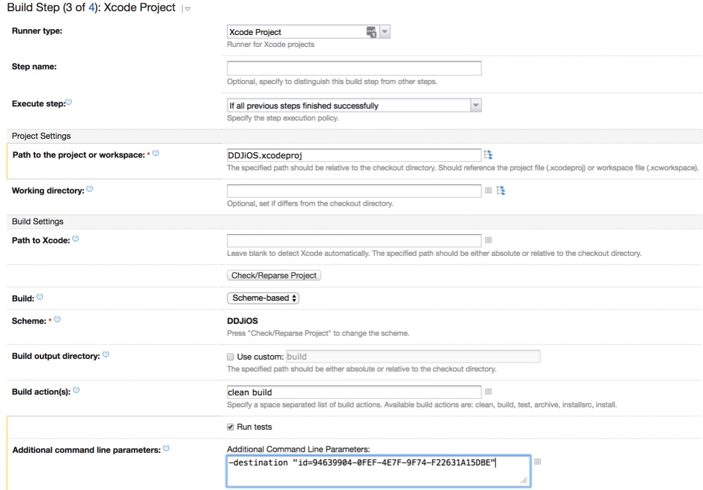
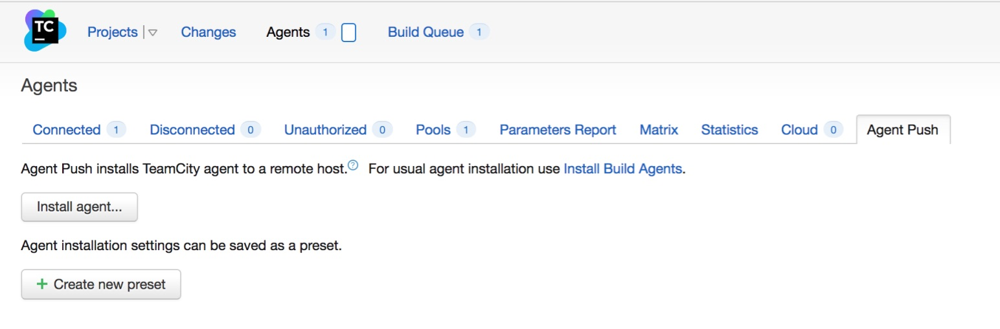

Setting up Simple Continuous Integration for iOS Development with XCode
Setting up reliable continuous integration (CI) for XCode can be a nightmare. I personally wrestled with the problem for a long while, eventually finding a somewhat convoluted workaround to make it work. However, I’ve since found a way to develop and maintain a reliable CI solution. Following is how you can whip together something similar.
In this guide, you’ll find a start-to-finish CI solution for an XCode project.
Vocabulary #
If you’re familiar with CI, you can probably skip this (short) section.
- Version Control System (VCS): The system used for tracking changes and version control. In this example, it is git/BitBucket.
- CI Server: The server that monitors the VCS and tells build agents when and what to run.
- Build Agent: The computer that runs builds and tests, at the behest of the CI server.
- Package Manager: From Wikipedia: “A package manager or package management system is a collection of software tools that automates the process of installing, upgrading, configuring, and removing computer programs for a computer’s operating system in a consistent manner.” This means when you add new third-party libraries, no additional work is necessary to make them work on the server.
- Dependency Resolution: This is a technology that provides a way to programmatically install, manage, and update third-party libraries.
- GUID/UUID: Globally Unique IDentifier, or Universally Unique IDentifier. These two terms are interchangeable. It is a 128-bit number that, when generated, is guaranteed to always be unique. It is usually in hexadecimal, with a few dashes in between. If you want to know more, here’s the Wikipedia Article.
What You’ll Need #
Unfortunately, this process requires some resources that are not insubstantial. They are as follows:
- A server to host your CI. This can be run on most operating systems, including MacOS, Windows, most Linux distros, and even BSD. The server in my example is a dedicated computer running FreeBSD 11.0. Ideally, this machine will have a high uptime, so a personal laptop is not ideal.
- A build agent. This machine must run the most recent version of MacOS. A high uptime is ideal, but not necessary for a small operation, like mine. I use a dedicated 2011 MacBook Pro using NoSleep. This keeps the machine from going to sleep when closing the lid. This can be the same machine as the CI server if desired.
- XCode must be installed on the build agent, along with all of the command line tools. It can
be installed from the Mac App Store.
Once XCode is installed, run
xcode-select -installfrom the Terminal. - TeamCity or another CI solution. My guide will use TeamCity, because it’s what I’m most familiar with, as well as because it has XCode support out-of-the-box.
- (Optional) Carthage or another package manager. This simplifies building dependencies on the build agent, as you’ll see later in the guide.
Step 1: Setting up the CI Server #
In my example, I’ll be setting it up on a MacOS machine. If using a Linux or BSD machine, this should be similar. For a Windows machine, your mileage may vary.
Prerequisites #
First, ensure that your computer has JDK 1.8 installed. Note that this is the most recent version at the time of writing, and so in the future this dependency may change. If you are not using TeamCity, this step may or may not be necessary.
Setting up the TeamCity Service #
To start, on the machine that will be running the CI server, download TeamCity. There are respective download options for various common operating systems. In this tutorial, I’m assuming use of one of the tar.gz downloads. If using FreeBSD or another flavor of BSD, the Linux version should work. It’s up to you to choose the version that’s right for you. If the machine running this server is a MacOS laptop, I highly recommend also downloading NoSleep and Amphetamine to keep it running at all times. This assumes a dedicated computer; for a small or temporary setup, using a non-dedicated computer (such as a dev laptop) may be sufficient.
In the extracted directory structure, the configuration files can be found in conf and the executable
files can be found in bin. The configuration files can be changed to suit your needs. I won’t get into it
here, but if you want to customize your settings, look up a guide on configuring TomCat.
Navigate to bin in your Terminal, and run ./runAll.sh start. This will start the server, and you can expect
an output similar to the following. To stop the process, run ./runAll.sh stop kill. Note that this process
will not run on startup, and you will need to use launchd/systemd/Services as appropriate for the OS.

Now navigate to http://localhost:8111/. If accessing this from a machine other than the one you just set up the server on, use that machine’s hostname instead of localhost. You’ll see a setup dialog, similar to the one below. Walk through the setup process. The default settings should be fine for simple use cases.
Once you’ve finished the process and created an administrator account, you’re ready to start using TeamCity. If it’s installed on MacOS, it will also install the TeamCity agent, which will make the next step easier.
From there, go to the administration page. From the administration page, create a project, and create a build configuration under that project. I recommend creating a project from a VCS source, as this will make things easier down the line.
Setting up additional user accounts, builds, and other settings is left as an exercise to the reader 😉.
Some nice additions #
If you’re running this on a company network, or you use a VPN to connect to the server, you’re probably done. However, if this is for personal use or for use of a small project, you may want to look at a DDNS configuration. DDNS means Dynamic Domain Name System. Basically, it sets it up such that a computer that may or may not have a permanent IP address has a domain name that tracks it and follows it wherever it goes. You can get a free version of this service from ddns.net.
Configuring your Build Steps #
TeamCity will try to auto-detect build steps. If they’re appropriate for you, you can use them. If not, creating them manually is easy. My example build will contain four steps, but these can be adjusted as necessary.
Substep 1: Dependency Resolution #
The goal of this step is to ensure that your build agent has whatever software packages or libraries your app will need to work.
You only need to follow this step if you use a package manager for dependency resolution (which I
highly recommend). If you don’t, resolving dependencies is left up to you. Note that the following
are simplified somewhat; best practices would dictate that one store something like the path to
carthage in an environment variable. This would make it scale better if you have more than one build
agent, or if some agents do not have carthage installed.
Create a command line build step, as shown below. Name the step something like “dependency resolution”
or “Carthage” (if you’re using Carthage as a package manager). For the “build script content” you’ll enter
something like carthage bootstrap --platform iOS. The industry standard for dependency resolution is
Cocoapods, but carthage has a slightly simpler setup. When running builds, this
may make it take a bit longer, but the reliability is worth the minutes in my opinion. Note that if this
is a concern, cocoapods can be faster.
Substep 2: Simulator Configuration #
First, some background: In order to run tests, XCode uses an app, the aptly-named Simulator, which simulates an iOS device. When you run tests, it will open the simulator, install the app you’re testing onto it, and then run tests through the app it installed.
The iOS Simulator can cause lots of problems if not handled properly. This step makes the builds much easier and much more reliable, albeit taking a few minutes longer. Ignoring this step can cause your build to hang indefinitely.
Before you do this, identify the iOS simulator that you want to build for and run your tests.
You will have multiple options for the various devices that Apple supports, such as the iPhone 7 or the
iPhone SE. If you wish to use multiple simulators, then the xcrun commands shown below should be run
for those devices as well. To get a list of possible devices, run xcrun simctl list. This will give you
a list of the devices, and their GUIDs, available for testing. Let’s say we choose the GUID
“94639904-0FEF-4E7F-9F74-F22631A15DBE”. In the following steps, replace that GUID with the GUID of your
choice (or better yet, put it in an environment variable on the build agent).
Once again, create a command line build step. Call the step something like “Reset Simulator”. For the script content, enter the following (with your simulated device’s GUID):
xcrun simctl shutdown 94639904-0FEF-4E7F-9F74-F22631A15DBE
killall Simulator
killall com.apple.CoreSimulator.CoreSimulatorService
xcrun simctl erase 94639904-0FEF-4E7F-9F74-F22631A15DBE
The first line shuts down the simulator for the device if it’s running. The second and third lines ensure that the Simulator is shut down, to ensure a sanitary testing environment. Finally, the final line erases the content and settings of the simulated device. This ensures both a sanitary testing environment, and avoids an issue where, when running an automated build, it can hang indefinitely.
Substep 3: The Fun Part #
At long last, it’s time to set up our XCode build step! In the build step type, select XCode Project.
Click “Show advanced options”. Set the Path to the project or workspace to your .xcodeproj file. Use a
scheme-based build. (Note that to use scheme-based builds, you must configure a build scheme in XCode and
push your changes to VCS.) Set build action(s) to clean build. Check the “Run tests” box. Finally, in
the Additional command line parameters box, enter the following:
-destination "id=94639904-0FEF-4E7F-9F74-F22631A15DBE". This will tell it to run the build on and for
the device we set up in the previous step.
Here’s an example of my setup for one of my projects (with some minor changes to make it more readable):

Substep 4: Cleanup #
Finally, we want to clean up to save resources. This is fairly self-explanatory. Create a final command-line step with the following code:
xcrun simctl shutdown %env.simulator_guid%
killall Simulator
killall com.apple.CoreSimulator.CoreSimulatorService
Icing on the cake #
Finally, a few options to add some nice features to your build.
VCS #
Head to the version control settings tab of the build configuration. Here, you can customize your VCS
settings. In the branch specification, I recommend choosing which branches the server should run. To run
all branches and commits, enter +:* in the branch specification box.
VCS Labeling #
TeamCity has a lot of really cool features. One of my favorites is VCS labeling. To reach this, go to the
Build Features tab. Click “Add build feature” and select the VCS root and the branches you want to enable
it for. I like to set up two of these: One with the labeling pattern build-%system.build.number% for all
builds, and one with the labeling pattern build-%system.build.number%-passed that is added to successful
builds only. Then, from a GUI client like SourceTree, you can see at a glance which build is associated
with which commit, as well as which commits failed.
Step 2: Setting up the TeamCity Agent #
If your agent is the same as the CI server, skip to step 3.
There are some basic requirements for setup. If these requirements are not met, you will not be able to successfully install the agent.
- The desired agent must have a stable (and preferably fast) internet connection.
- The desired agent must have space to install the agent.
- Time. The agent will take a while to install, because the agent installation process installs all of its dependencies (and there are a lot of them). Let the agent sit for an hour (depending on connection speed) before you decide that something’s wrong. Activity monitor may be used to investigate. The name of the process running the installation is “java”. There may be multiple processes doing this.
On the MacOS machine you want to run as an agent, the simplest way is using TeamCity’s agent push functionality. To use this, you must enable remote login on the desired agent in System Preferences > Sharing. This allows TeamCity to ssh to your machine and install the agent. To use TeamCity’s agent push functionality, you must either be on the same network, or have an IP/DNS address at which the server will be able to reach the agent.
To reach TeamCity’s agent push functionality, click the “Agents” tab at the top menu. In the submenu, select agent push, and then click the install agent button. Enter appropriate details for the agent, then go.
If you can’t use agent push, it may be more reliable to manually install. To manually install, go to the “Agents” tab at the top, then click the link on the right that says “Install build agent”, and select the zip file distribution.

Configuring #
Once the agent is installed, you can configure the agent’s settings in the conf/buildAgent.properties
file. Here you can set the agent name, environment variables for TeamCity, and more.
Running #
To run, in Terminal navigate to the bin folder. Then, run ./agent.sh start. To stop the process, run
./agent.sh stop kill. This will not run on start, but you can find tutorials online for configuring
this with launchd. I recommend Launch Control to make configuring
these easier.
Step 3: Concluding #
You’re set up! Congratulations! 🎉